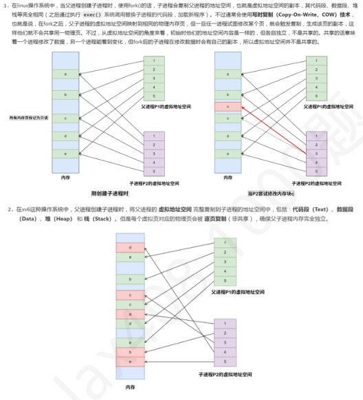

第 1 题
以下对进程的描述中，错误的是（ ）
A． 进程是动态的概念 B． 进程执行需要CPU C． 进程是有生命周期的 D． 进程是指令的集合 答案与解析 答案：D
进程是程序的一次执行过程，因而是动态的；既然是一次执行，就需要使用CPU且表明进程有生命周期，即具有创建运行消亡这样的一个过程。而程序是指令和数据的集合，是一个静态的概念，因此本题答案为D。
教材第 121 页 第 2 题
下列关于进程的说法中，正确的是（ ）
A． 内存中的程序段就是进程 B． 并行的进程之间都存在着相互依赖和制约的关系 C． 进程的并发执行可能导致程序的结果与进程进行速度有关 D． 进程的四大特征为动态性、并发性、共享性和异步性 答案与解析 答案：C
A 错误，进程由3 部分组成：程序段、数据段、进程控制块PCB；A 选项认为程序段就是进程是片面和错误的：进程运行确实需要将程序段装入内存，但内存中的程序段并不是进程。 B 错误，并行的进程之间，可以利用信号量等机制实现同步、互斥等关系，但是并不是所有并行 (或并发)进程间都有相互依赖或制约的关系。 C 正确，当多个进程并发执行时，会使得进程具有不可再现性：并发执行的进程，在相同的初始环境和条件下，可能得到不同的结果。这是因为进程失去了封闭性。 D 错误，进程的四大特征为动态性、并发性、独立性和异步性。
教材第 121 页 第 3 题
下列关于线程的叙述中，正确的是（ ）。
A． 一个进程只有一个线程 B． 线程之间的通信需要依靠操作系统内核实现 C． 线程只拥有少量私有资源，所以不能独立被调度 D． 属于不同进程的线程，它们的地址空间相互独立 答案与解析 答案：D
进程可以包含多个线程，A 错误；同一进程内的多个线程共享进程的用户地址空间，不必依赖内核实现线程间通信，B 错误； C 选项前半句正确后半句错误，内核级线程操作系统中线程是调度的最小单位。
教材第 121 页 第 4 题
进程控制块（PCB）中不包含的信息是（ ）。
A． 进程标识符（PID） B． 进程状态 C． 程序源代码 D． 内存管理信息 答案与解析 答案：C
PCB 中不包含程序源代码，程序源代码属于程序段。
教材第 121 页 第 5 题
下列选项中，可以导致创建新进程的操作有（ ）项。
A． 2 种 B． 3 种 C． 4 种 D． 5 种 答案与解析 答案：C
Ⅰ.当用户登录系统时，系统通常会为该用户创建一个初始进程，例如shell进程
教材第 121 页 第 6 题
下列操作中，操作系统在创建新进程时，需要完成的是（ ）
A． 仅Ⅰ B． 仅Ⅰ、Ⅱ C． 仅Ⅰ、Ⅲ D． 仅Ⅰ、Ⅲ 答案与解析 答案：B
操作系统创建一一个新进程的过程如下：为新进程分配一个唯一的进程标识号pid，并申请一个空白PCB (PCB是有限的)。若PCB申请失败，则创建失败。为进程分配其运行所需的资源，如内存、文件、I/O设备和CPU时间等(在PCB中体现)。这些资源或从操作系统获得，或仅从其父进程获得。如果资源不足(如内存)，则并不是创建失败，而是处于创建态，等待内存资源。此时，创建该进程的父进程会被阻塞。初始化PCB，主要包括初始化标志信息、初始化处理机状态信息和初始化处理机控制信息，以及设置进程的优先级等。若进程就绪队列能够接纳新进程，则将新进程插入就绪队列，等待被调度运行。因此，Ⅰ、Ⅱ正确，Ⅲ，Ⅳ错误。
教材第 121 页 第 7 题
下列选项中，会导致进程从阻塞态变为就绪态的事件是（ ）
A． 执行P (wait) 操作 B． 启动I/O 操作 C． I/O 操作结束 D． 当前时间片到期 答案与解析 答案：C
A.执行P (wait)操作：当一个进程执行P 操作（也称为wait 操作）请求一个它当前无法获取的资源（例如，信号量的值小于或等于0 时），该进程会从执行态转变为阻塞态，等待资源可用。 B.启动I/O 操作：当一个进程启动一个I/O 操作时（例如，从磁盘读取数据），它通常会进入阻塞态，以等待I/O 操作的完成。 C. I/O 操作结束：假设P1 进程执行时，接收到一个外设发出的中断请求信号，然后响应并且执行对应的中断服务程序，若检测到该I/O 任务完成(假设这是进程P2 请求的字符打印任务，此时字符已经打印完毕)，便会将进程P2 解除阻塞，加入就绪态队列，因此C 正确；这个过程较为复杂，涉及到I/O强化内容，下面放两张图抛砖引玉； D.当前时间片到期：当前时间片到期是分时操作系统中进程调度的一个事件。当一个正在执行的进程用完了分配给它的时间片，它会从执行态转变为就绪态。相应的，CPU会调度其他进程上处理器，使其从就绪态转变为执行态。
教材第 122 页 第 8 题
下列选项中，发生的事件和所导致的进程状态切换对应正确的有（ ）
A． 仅Ⅰ、Ⅱ B． 仅Ⅲ C． 仅Ⅲ、Ⅳ D． 仅Ⅱ、Ⅲ、Ⅳ 答案与解析 答案：C
Ⅰ错误，当一个正在执行的进程的时间片用完后，它会被剥夺CPU 的使用权，其状态会从执行态转换为就绪态，并排入就绪队列等待下一次调度。 Ⅱ错误，如果当前进程申请的临界资源已被其他进程占用，那么该进程会因为无法获得所需资源而进入阻塞态，而不是就绪态。 Ⅲ正确，当一个因等待I/O 操作而处于阻塞态的进程，其所等待的I/O 操作完成时（例如，数据读取完毕），I/O 设备会发出中断信号。操作系统响应中断，并将该进程从阻塞态唤醒，使其进入就绪态，等待CPU 调度。 Ⅳ正确，如果一个进程因申请临界资源而处于阻塞态，当占用该临界区的其他进程退出临界区并释放该资源时，操作系统会唤醒因等待该资源而阻塞的进程。被唤醒的进程状态会从阻塞态变为就绪态。综上所示，选C。
教材第 122 页 第 9 题
进程P 在执行过程中，下列事件中可能导致其阻塞的是（ ）。
A． 仅Ⅰ B． 仅Ⅰ、Ⅱ C． 仅Ⅱ、Ⅲ D． Ⅰ、Ⅱ、Ⅲ 答案与解析 答案：B
时间片用完会导致进程从运行态变为就绪态，不会阻塞
教材第 122 页 第 10 题
下列事件中，可能导致进程终止的是（ ）。
A． 仅Ⅰ B． 仅Ⅰ、Ⅱ C． 仅Ⅱ、Ⅲ D． Ⅰ、Ⅱ、Ⅲ 答案与解析 答案：D
以上三种情况都可能导致进程终止。
教材第 122 页 第 11 题
操作系统中，就绪队列通常只有一个，而阻塞队列可以有多个，这是因为（ ）。
A． 阻塞态进程数量远多于就绪态进程 B． 阻塞态进程等待的原因多种多样 C． 就绪态进程只需要等待CPU 资源 D． B 和C 都是原因 答案与解析 答案：D
进程处于就绪态的原因只有还没有分配到CPU，但是进程处于阻塞态的原因可能是多种多样的，因此每一类原因造成阻塞的进程都会单独构建一个PCB等待队列。
教材第 122 页 第 12 题
下列关于父子进程的说法中，正确的有（ ）
A． 仅Ⅰ、Ⅳ B． 仅Ⅱ、Ⅲ C． 仅Ⅰ、Ⅱ、Ⅲ D． 仅Ⅱ、Ⅲ、Ⅳ 答案与解析 答案：A
在操作系统中，父子进程的概念是通过进程创建过程中形成的层级关系来定义的。父进程是指创建子进程的进程，而子进程则是由父进程通过特定的系统调用（如fork()）创建出来的新进程。在Linux 系统中，fork()函数被用来创建一个新的进程，称为子进程。这个子进程开始时几乎完全是父进程的副本，包括代码段、数据段和堆栈等。某些操作系统全局资源是存在父子继承的，例如后面会学到的文件、管道、设备等，对这些特定的全局资源来说，子进程通常会继承父进程对它们的访问权限。 Ⅰ正确，注意父子进程是两个不同的进程，因此其pid 和PCB 都不同，也不会共享地址空间，我们知道进程具有独立性，是一个能独立运行、独立获得资源和独立接受调度的基本单位，要是可以共享地址空间，父进程进程执行的过程中发生了中断，但是在它由于中断而被暂停执行的过程中，其子进程还在执行，并且更改了内存里的部分信息，这就破坏了父进程的现场，因此二者不会共享地址空间。 【扩展】： Ⅱ错误，如果父进程在子进程结束之前终止，那么子进程将成为孤儿进程。在Unix 和Linux 系统中，孤儿进程将由init 进程（PID 为1 的进程）收养，并最终被终止。 Ⅲ错误，如果子进程先于父进程退出，并且父进程没有主动回收子进程资源，子进程就会变成僵尸进程。 Ⅳ正确，临界资源一次只能为一个进程所用。综上所示，选A。

教材第 122 页 第 13 题
在采用页式虚拟存储管理的操作系统中，当发生进程切换时，为了确保新调度的进程能够正确地在其独立的地址空间中运行，操作系统必须更新处理器的某些关键寄存器。下列哪些寄存器的内容一定需要根据新进程的PCB 进行更新？
A． 仅Ⅰ、Ⅲ B． 仅Ⅱ、Ⅳ C． 仅Ⅰ、Ⅲ、Ⅳ D． Ⅰ、Ⅱ、Ⅲ、Ⅳ 答案与解析 答案：D
Ⅰ正确，在页式存储管理中，CPU 通过页表将逻辑地址转换为物理地址。每个进程都有其独立的页表。当进程切换时，操作系统必须更新CPU中指向当前活动页表基址的专用寄存器。这样，新调度的进程在执行时才能使用其自身的页表进行正确的地址映射，访问其独立的地址空间。 Ⅱ正确，通用数据寄存器（如累加器、数据寄存器等）保存了进程运行时的中间计算结果和数据。在进程切换时，这些寄存器的内容属于被切换出去进程的上下文，必须被保存到该进程的进程控制块 （PCB）中，并加载新调度进程之前保存的通用寄存器内容到CPU 中。否则，新进程会使用旧进程的寄存器数据，导致运行错误。 Ⅲ正确，程序计数器指示CPU 下一条要执行的指令的地址。进程切换时，当前进程的PC 值（即下一条要执行的指令地址）必须被保存到其PCB 中。然后，将新调度进程在其上次被换下时保存的PC值加载到CPU 的指令指针寄存器中，以便新进程能从正确的位置继续执行。 Ⅳ正确，每个进程都有自己的用户栈和内核栈，栈顶指针寄存器（如ESP、SP）指向当前栈的栈顶。进程切换时，当前进程的栈顶指针必须被保存，并且新进程的栈顶指针必须被恢复。这确保了新进程在执行时能够正确使用其自身的栈空间进行函数调用、局部变量存储等操作。综上所述，选D。
教材第 122 页 第 14 题
下列关于中断响应与进程切换的上下文切换区别的叙述中，错误的是（ ）。
A． 中断响应保存和恢复上下文是分开进行的，而进程切换的上下文保存与恢复是连续进行的 B． 中断响应可能发生特权级切换，进程切换全程在内核态下进行 C． 中断响应不涉及地址空间切换，进程切换涉及地址空间切换 D． 中断响应维护的上下文一定是用户上下文，进程切换维护的一定是内核态下的上下文 答案与解析 答案：D
中断响应维护的上下文可能是用户上下文（因为多重中断的存在），进程切换维护的一定是内核态下的上下文。
教材第 123 页 第 15 题
在采用页式虚拟存储管理的操作系统中，进程P1 在中断处理结束准备返回用户态的路径上触发调度，随后发生的进程切换中，哪些寄存器的内容一定需要保存？
A． Ⅰ、Ⅱ、Ⅲ、Ⅴ B． Ⅱ、Ⅲ、Ⅳ、Ⅴ C． Ⅱ、Ⅲ、Ⅴ D． Ⅰ、Ⅱ、Ⅲ、Ⅳ、Ⅴ 答案与解析 答案：C
当前进程的页表基址和栈基址不会因为进程的执行而改变，因此当发生进程切换时，不一定需要保存，但是一定要更新；至于其他的寄存器里的内容会随着进程的执行发生变化，因此需要先保存再更新。 【扩展】：PSW寄存器的内容在进程切换的过程中不需要保存或更新，在进程P1切换到进程P2，进程P2 返回用户态时才会更新；PSW 的保存与回复可能因具体实现架构而异，此处仅做拓展。
教材第 123 页 第 16 题
以下关于进程切换的说法中，正确的是（ ）
A． 进程切换发生在用户态，从一个进程的运行态切换到另一个进程的运行态 B． 中断/异常（系统调用）的发生是进程切换的前提 C． P0 进程切换为P1 进程的过程中，操作系统需要保存的信息有P1 进程的断点，现场，堆栈中的数据，进程级打开文件表，P0 进程的页表基址等信息 D． 中断响应与进程切换保存和恢复上下文都是连续进行的 答案与解析 答案：B
A 错误，进程切换全程发生在内核态，当进程从用户态切换到内核态（如通过系统调用、中断或异常），操作系统才会执行进程调度；切换过程中，CPU 的控制权完全交给内核，因此切换操作必须在内核态完成。 B正确，中断/异常是进程切换的前提条件，因为只有在内核态才能进行调度和切换。例如，当进程执行系统调用（如fork、exec）或发生异常（如缺页中断），会从用户态进入内核态，此时操作系统可能触发进程调度，从而引发进程切换。 C错误，进程除了寄存器以外的还有很多其他状态，它有变量，堆中的数据等等，但是所有的这些数据都在内存中，并且会保持不变。我们没有改变进程的任何栈或者堆数据。所以进程切换的过程中，cpu中的寄存器是唯一的不稳定状态，且需要保存并恢复。而所有其他在内存中的数据会保存在内存中不被改变，所以不用特意保存并恢复。我们只是保存并恢复了cpu中的寄存器，因为我们想在新的进程中也使用这组寄存器。至于页表基址本来就在进程P0 的pcb 中，因此进程切换时，只需要从进程P1 的PCB 中取出P1 的页表基址覆盖掉原页表基址寄存器中的内容(P1 的页表基址)即可；需要保存的信息有通用寄存器，PC，栈顶指针寄存器等，至于页表基址寄存器，栈基址寄存器等只需要更新，不需要保存； D错误，中断响应保存和恢复上下文是分开进行的，分别位于中断响应和中断返回的过程中；而进程切换的上下文保存与恢复是连续进行的（两个不同进程之间）。
教材第 123 页 第 17 题
下列关于僵尸进程与孤儿进程的说法中，正确的有（ ）
A． 仅Ⅰ、Ⅱ B． 仅Ⅲ、Ⅳ C． 仅Ⅰ、Ⅱ、Ⅲ D． Ⅱ、Ⅲ、Ⅳ 答案与解析 答案：D
Ⅰ.错误，子进程先于父进程退出时，只有在父进程未调用wait()或waitpid()的情况下，子进程才会成为僵尸进程；如果父进程在子进程退出前已调用wait()，则子进程会被立即回收，不会成为僵尸进程。
教材第 123 页 第 18 题
关于进程的状态和状态转换，以下哪一种说法是正确的（ ）。
A． 进程由创建而产生，由调度而执行，因得不到资源而挂起，以及由撤销而消亡 B． 新进程的创 C． 进程在运行期间，不断地从一个状态转换到另一个状态，它可以多次建必然引起进程的调度 D． 正在执行的进程，处于就绪状态和执行状态，也可多次处于阻塞状态，但可能排在不同的阻塞队列若时间片用完，会进入阻塞状态 答案与解析 答案：C
A 错误，进程因得不到资源（如等待I/O 操作完成、等待信号量等）而进入的通常是阻塞态，而不是挂起态。挂起态通常是由于终端用户请求、父进程请求、系统负荷调节或操作系统自身需要等原因，将进程置于静止状态。 B 错误，新进程创建完成后，会进入就绪态并被放入就绪队列。此时是否立即引起进程调度取决于调度策略。在非抢占式调度中，当前运行的进程会继续执行直到主动放弃CPU 或结束。在抢占式调度中，如果新创建的进程的优先级高于当前运行的进程，则可能会引起调度。因此，新进程的创建不必然引起进程调度。 D 错误，当正在执行的进程时间片用完后，它会从执行态转换为就绪态，并被放入就绪队列的末尾，等待下一次调度。它不会进入阻塞态，因为时间片用完并不意味着它在等待某个外部事件。
教材第 123 页 第 19 题
下列关于进程的状态变化，不可能直接发生的是（ ）
A． Ⅰ、Ⅳ B． Ⅱ C． Ⅱ、Ⅲ D． Ⅲ 答案与解析 答案：C
CPU 状态变化中可能直接发生的有：①就绪态→执行态，如进程获得时间片。
教材第 123 页 第 20 题
下列关于进程上下文切换的叙述中，错误的是（ ）
A． 进程上下文指进程的代码、数据以及支持进程执行的所有运行环境 B． 进程上下文切换机制实现了不同进程在一个处理器中交替运行的功能 C． 进程上下文切换过程中必须保存换下进程在切换处的程序计数器（PC）的值 D． 进程上下文切换过程中必须将换下进程的代码和数据从主存存到磁盘上 答案与解析 答案：D
进程除了寄存器以外的还有很多其他状态，它有变量，堆中的数据等等，但是所有的这些数据都在内存中，当该进程下处理机时这些信息会保持不变。我们没有改变进程的任何栈或者堆数据。所以进程切换的过程中，cpu中的寄存器是唯一的不稳定状态，且需要保存并恢复。而所有其他在内存中的数据会保存在内存中不被改变，所以不用特意保存并恢复。我们只是保存并恢复了cpu中的寄存器，因为我们想在新的进程中也使用这组寄存器。
教材第 124 页 第 21 题
下列关于进程状态的转换的说法中，错误的是（ ）
A． 进程状态的转换和对资源的需求都会记录在进程控制块中，进程结束时进程控制块需要回收 B． 信号量的signal（）和wait（ ）操作其实是对系统调用的封装，会导致进程在运行态、就绪态和阻塞态之间转换 C． 当进行进程调度时，一个高优先级的进程抢占低优先级进程的CPU 后，低优先级进程的状态转为就绪态 D． 成功执行完创建原语后，进程的状态转为创建态 答案与解析 答案：D
创建进程是一个很复杂的过程：首先由进程申请一个空白PCB，并向PCB 中填写用于控制和管理进程的信息；然后为该进程分配运行时所需的资源；最后，将该进程的状态转为就绪态并插入就绪队列的队尾。然而，如果进程所需的资源不能得到满足，例如系统尚无足够的内存装入进程，即创建工作尚未完成，进程不能被调度运行，那么此时进程所处的状态称为创建态。如果进程创建成功，那么进程状态就会转为就绪态，选项D 错误。
教材第 124 页 第 22 题
在支持多线程的系统中，一个进程可以包含多个线程，这些线程（ ）
A． 共享进程的虚拟地址空间 B． 不共享进程的资源 C． 是资源分配的单位 D． 共享各自的堆栈 答案与解析 答案：A
A 正确，在多线程系统中，线程共享同一进程的虚拟地址空间，进程的虚拟地址空间包括代码段、数据段、堆、共享库等，线程之间可以直接访问同一进程的内存数据（如全局变量、堆内存），无需通过进程间通信（IPC）。 B 错误，线程共享进程的资源包括地址空间、进程打开文件表、套接字和其他系统资源。如果线程不共享资源，就无法高效协作，这与多线程设计初衷相悖。 C 错误，资源分配的最小单位是进程，而非线程；进程负责分配系统资源（如内存、文件、I/O 设备等），线程仅作为执行调度的单位。 D 错误，每个线程拥有独立的堆栈，用于存储局部变量、函数调用参数、返回地址等；若共享堆栈，可能导致数据混乱（如函数调用栈被覆盖）；线程切换时，操作系统会保存当前线程的堆栈指针，并恢复目标线程的堆栈指针。
教材第 124 页 第 23 题
下列关于进程和线程的特性与管理的叙述中，正确的有（ ）
A． 仅Ⅰ、Ⅱ B． 仅Ⅰ、Ⅲ C． 仅Ⅰ、Ⅲ、Ⅳ D． Ⅰ、Ⅱ、Ⅲ、Ⅳ 答案与解析 答案：C
Ⅰ正确，不管系统是否支持线程，进程都是资源分配的基本单位。 Ⅱ错误，笼统的讲，引入现成的OS 中，线程是调度的基本单位（引自汤小丹计算机操作系统慕课版P64）。但是本题强调用户级线程与内核级线程的实现方式，在用户级线程中，其调度仍然是以进程为单位进行的（引自汤小丹计算机操作系统慕课版P67）。 Ⅲ正确，同一进程中的所有线程共享该进程的地址空间（包括代码段、数据段）以及进程所拥有的其他资源（如打开的文件、信号量等）。但是，每个线程为了能够独立执行，必须拥有自己私有的、必不可少的资源，这包括独立的程序计数器（PC）以记录执行位置，独立的寄存器组来保存工作变量和状态，以及独立的栈空间用于函数调用和局部变量存储。 Ⅳ正确，用户级线程的管理（创建、调度、切换）是由用户空间的线程库完成的，对操作系统内核是透明的，内核不知道用户级线程的存在。因此，用户级线程甚至可以在不支持内核级线程的操作系统上实现。由于用户级线程的切换在用户态完成，不需要进行用户态到内核态的模式切换，其切换开销通常远小于需要在内核态完成切换的内核级线程。综上所述，选C。
教材第 124 页 第 24 题
在支持多线程的操作系统中，有两种实现线程的方式：内核支持的线程和用户级线程。以下哪种说法是错误的?
A． 用户级线程的上下文切换代价相对较小 B． 内核支持的线程通常需要更多的内存空间来存储线程控制块和上下文信息，而用户级线程只需要存储少量的信息 C． 内核支持的线程能够实现更好的多核性能和负载均衡 D． 用户级线程的调度和同步可以更快速和灵活，并且公平性更好 答案与解析 答案：D
A 正确，用户级线程的上下文切换完全在用户空间完成，无需进入内核态，因此无需系统调用，代价较低。内核级线程切换需要保存和恢复更多寄存器状态，且需进入内核态，代价更高。 B 正确，内核级线程的控制块（TCB）包含更多元数据（如线程状态、优先级、调度信息等），需要更多内存。用户级线程的控制块仅需存储少量信息（如栈指针、程序计数器等），因为其调度由用户空间库管理。 C 正确，内核级线程可被调度到不同CPU 核心上运行，充分利用多核架构。用户级线程通常只能在一个进程中运行，无法直接利用多核优势。（操作系统内核无法感知到用户级线程的存在） D 错误，用户级线程是由用户程序或者线程库实现的，它们不依赖于操作系统内核，其调度和同步也需要消耗CPU 资源，而且它们无法充分利用操作系统内核的调度器，可能会出现资源争用和不公平的问题。（用户级线程的调度依赖于用户空间的实现，若未设计公平的调度算法，可能不如内核级线程的调度公平。）例如，在采用时间片轮转调度算法时，各个进程轮流执行一个时间片，这对于各进程而言貌似是公平的，但假如在进程A 中包含了1 个ULT（user level thread，用户级线程），而在进程B中包含了100 个ULT，那么，进程A 中线程的运行时间将会是进程B 中各线程运行时间的100 倍；相应地，进程A 的运行速度也要快上100 倍，因此说实质上并不公平。因此D 错误。
教材第 124 页 第 25 题
下面关于内核级线程的描述中，正确的有（ ）。
A． 仅Ⅰ、Ⅱ B． Ⅰ、Ⅱ、Ⅲ C． Ⅰ、Ⅱ、Ⅳ D． Ⅰ、Ⅱ、Ⅲ、Ⅳ 答案与解析 答案：C
Ⅲ错误，如果一个进程由多个内核级线程构成，一个线程的阻塞不会导致整个进程的阻塞。
教材第 124 页 第 26 题
下列关于用户级线程优缺点的描述中，正确的有（ ）。
A． 仅Ⅰ、Ⅳ B． Ⅰ、Ⅱ、Ⅲ C． Ⅰ、Ⅲ、Ⅳ D． Ⅰ、Ⅱ、Ⅲ、Ⅳ 答案与解析 答案：B
Ⅰ正确，用户级线程是完全由进程管理的，操作系统无法感知到，因此调度的单位依旧是进程。 Ⅱ正确，用户级线程的调度完全由用户空间的线程库实现，操作系统不参与线程的调度。 Ⅲ正确，在用户级线程中，不同的应用程序自己决定如何调度线程。 Ⅳ错误，操作系统以进程为单位进行调度，因此这些线程每次只能执行一个，无法并行执行。
教材第 125 页 第 27 题
下面的叙述中，正确的是（ ）。
A． 同一进程的多个线程可以并发执行，不同进程的多个线程只能串行执行 B． 同一进程的多个线程只能串行执行，不同进程的多个线程可以并发执行 C． 多线程程序设计上，可以将程序的I/O 部分和计算部分拆分成两个线程，以发挥线程优势 D． 同一进程的线程间通信代价很低，但线程创建操作的代价和进程创建相似 答案与解析 答案：C
同一进程和不同进程的多个线程，均可并发执行，A、B错误。线程创建、销毁的代价低于进程，D错误。
教材第 125 页 第 28 题
下列关于多对一线程模型的论述中，正确的叙述是（ ）。
A． 指将多个内核级线程映射到一个用户级线程 B． 当一个线程被阻塞时，同一进程内的多个线程均会被阻塞 C． 多处理器操作系统中，同一进程的多个线程可以并行执行 D． 操作系统内核可以感知用户级线程的存在 答案与解析 答案：B
多对一模型指将多个用户级线程映射到一个内核级线程，操作系统无法感知到多个用户级线程的存在，A、D 错误。由于多个用户级线程只对应一个内核级线程，则一个线程的阻塞会导致整个进程的阻塞，B 正确。即使是多处理器操作系统，多对一线程模型下，多个线程也无法并发执行，任意时刻最多只能有一个用户级线程运行，C 错误。
教材第 125 页 第 29 题
将内核支持线程（kernel supported thread，KST）用户级线程（user level thread，ULT）进行组合，可以实现组合方式的ULT/KST 线程。下列关于多线程模型，说法错误的是（ ）
A． 组合方式中，一些KST 对应多个ULT，这是ULT 通过时分多路复用KST 来实现的 B． 多对一模型与一对一模型相比，多对一模型的线程管理的开销小，效率高，一对一模型的并发性能更好。 C． 多对一模型中多个线程不能同时在多个处理机上运行。一对一模型中允许多个线程并行地运行在多处理机系统上。 D． 多对多模型中，KST 的数目可以比ULT 数少，也可以多于或等于ULT 数量。 答案与解析 答案：D
A 正确，一些KST 对应多个ULT，这是ULT 通过时分多路复用KST 来实现的，即将ULT 对部分或全部KST 进行多路复用，并且程序员可按应用需要和机器配置对KST 的数目进行调整，以达到较好的效果。 B，C 正确，由于ULT 和KST 的连接方式不同，从而形成了3种不同的多线程模型：多对一模型、一对一模型和多对多模型。多对一模型，将多个ULT 映射到一个KST 上。该模型的主要优点是：线程管理的开销小，效率高。其主要缺点是：如果一个线程在访问内核时发生阻塞，则整个进程都会被阻塞；此外，在任一时刻，只有一个线程能够访问内核，多个线程不能同时在多个处理机上运行。一对一模型，将每个ULT 映射到一个KST 上。该模型的主要优点是：当一个线程阻塞时，允许调度另一个线程运行，所以它提供了比多对一模型更好的并发性能。此外，在多处理机系统中，它允许多个线程并行地运行在多处理机系统上。该模型的唯一缺点是：每创建一个ULT，相应地就需要创建一个KST，开销较大。 D 错误，多对多模型，将许多ULT 映射到同样数量或较少数量的KST 上。KST 的数目可以根据应用进程和系统的不同而变化，其可以比ULT 数少，也可以与之相等，但不会多于ULT 的数目。
教材第 125 页 第 30 题
下列关于线程说法错误的是（ ）
A． 耗时的操作使用线程，提高程序响应 B． 耗内存的操作使用线程，提高内存利用率 C． 多CPU 的系统使用线程，提高CPU 利用率 D． 并行操作使用线程，如C/S 架构中服务端程序为每个客户端请求创建一个线程来响应 答案与解析 答案：B
多线程可以提高CPU 利用率，不能提高内存利用率。
教材第 125 页